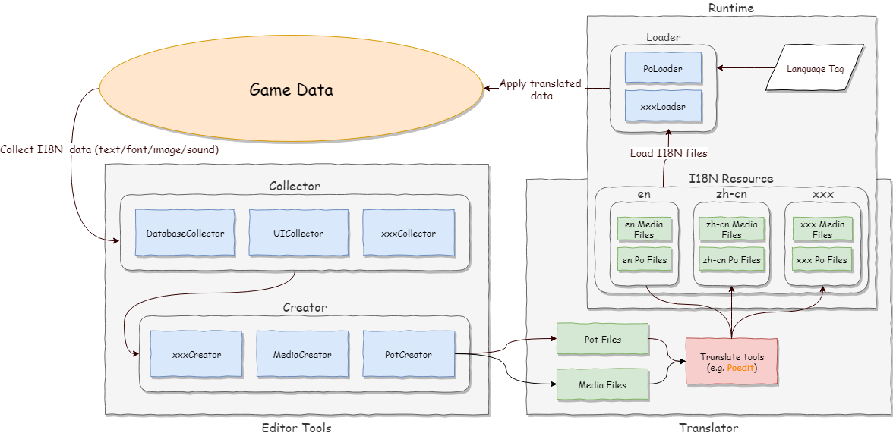
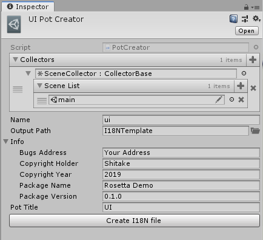

起步
1. 什么是 Rosetta

2. 获取
你可以从 GitHub Release 页面获取打包好的 unitypackage 文件。
另外，你也可以通过 git repo 以 UPM 的方式将 Rosetta 引入你的项目。
3. 在 Unity 中使用 Rosetta
Important
Rosetta 使用 Odin Inspector 来简化编辑器部分的开发。使用 Rosetta 前请确保已安装 Odin Inspector 插件。
3.1 标记 I18N 资源
Rosetta 的一大特点就在于通过一些 Unity 和 C# 的特性，从而尽量让整个 I18N 工作自动化。
I18N 资源可能会以各种方式存在于工程中。在 Unity 下大体存在以下几类情况：
- 以 Scene 内 的 GameObject 上挂载的 Component 的字段存在。例如 Text 组件的 Text， Image 组件的 Sprite(Source Image)等。
- 情况同第一条，不同的是这些 GameObject 存在于 Prefab 而不是 Scene。
- 在一些自定义的数据结构的相关字段上。这些数据可能来自一个具体 ScriptableObject 对象，或者对应的 xml、json 或 csv 的配置文件上。
以上三种情况对应着三种游戏内数据来源：UI、关卡/地图数据、数据库数据。在 Rosetta 中，针对每种情况都有预先定义好的标记来标记这些需要收集的 I18N 数据。
3.2 创建 I18NCreator 并生成翻译文件模板
对于 Rosetta 来说，I18N资源通过对应的方式标记后，就可以通过 I18N Collector 来收集，并通过 I18N Creator 生成对应的 I18N 模板文件。这些模板文件会提交给翻译工作人员完成翻译。最后在运行时，通过对应的加载器完成加载。

3.3 和翻译人员对接
Rosetta 对于不同的 I18N 资源会生成不同的翻译模板文件。对于文本资源，会生成标准的 GNU Gettext 翻译文件模板文件(.pot)。
翻译人员可以使用 GNU Gettext 的相关工具链。通过诸如 Poedit 这样的软件可以十分轻松的完成翻译工作。
对于多人合作翻译，一些翻译内容管理系统也是很好的选择（Weblate）。
除此之外，Rosetta 也会处理音频、图像和字体资源的 I18N 问题。对于这些内容，除翻译工作人员外，也会用到其他诸如美术、音频等工作者的参与。